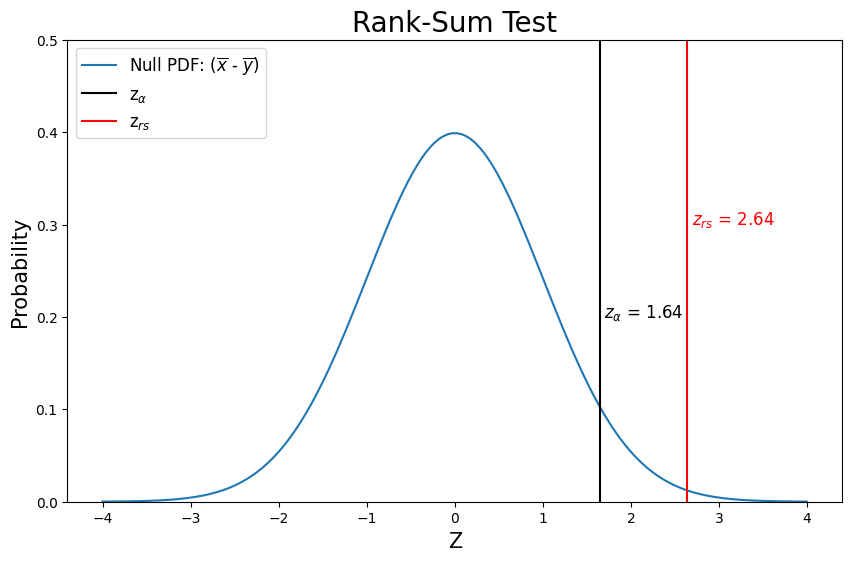

Lab 3-2: Rank-Sum Test Example#
Note that the scipy.stats.ranksums function should only be used to compare two samples from continuous distributions (i.e. theoretical distributions). It does not handle ties between measurements nor does it apply the continuity correction. For a rank sum test function that can compare discontinuous distribution (i.e. empirical data), handle ties, and apply a continuity correction, use scipy.stats.mannwhitneyu.
# import libraries we'll need
import pandas as pd
import numpy as np
import scipy.stats as stats
import matplotlib.pyplot as plt
%matplotlib inline
# Read the excel file
skykomish_data_file = '../data/Skykomish_peak_flow_12134500_WY1929_2023.xlsx'
skykomish_data = pd.read_excel(skykomish_data_file)
# Preview our data
skykomish_data.head(3)
/opt/hostedtoolcache/Python/3.7.17/x64/lib/python3.7/site-packages/openpyxl/worksheet/_reader.py:329: UserWarning: Unknown extension is not supported and will be removed
warn(msg)
| date of peak | water year | peak value (cfs) | gage_ht (feet) | |
|---|---|---|---|---|
| 0 | 1928-10-09 | 1929 | 18800 | 10.55 |
| 1 | 1930-02-05 | 1930 | 15800 | 10.44 |
| 2 | 1931-01-28 | 1931 | 35100 | 14.08 |
# Set our alpha and confidence from our prior z-tests
alpha = 0.05
conf = 1 - alpha
# Calculate z_alpha from a normal distribution (from our prior z-tests)
z_alpha = stats.norm.ppf(conf)
# Divide the data into the early period (before 1975) and late period (after and including 1977).
skykomish_before = skykomish_data[ skykomish_data['water year'] < 1977 ]
skykomish_after = skykomish_data[ skykomish_data['water year'] >= 1977 ]
In this example, we will test the significance of the change in the mean between the two sample periods using the two-sample Rank-Sum test. Read the documentation for scipy.stats.mannwhitneyu.
u_rs, p_rs = stats.mannwhitneyu(skykomish_after['peak value (cfs)'],
skykomish_before['peak value (cfs)'],
use_continuity=True,
alternative="greater")
print("U from stats.mannwhitneyu: {}".format(np.round(u_rs,4)))
print("P from stats.mannwhitneyu: {}".format(np.round(p_rs,4)))
z_rs = stats.norm.ppf(1-p_rs)
print("Z from looking up (1-P): {}".format(np.round(z_rs,4)))
U from stats.mannwhitneyu: 1453.5
P from stats.mannwhitneyu: 0.0041
Z from looking up (1-P): 2.6397
This returns u_mannwhitneyu, the test statistic U presuming this is a large enough sample that this is normally distributed, and p_mannwhitneyu, the one-sided p-value of the test.
# Make a plot
plt.figure(figsize=(10,6))
# Create values for z
z = np.linspace(-4, 4, num=160)
# Plot the Null PDF
plt.plot(z, stats.norm.pdf(z), label='Null PDF: ($\overline{x}$ - $\overline{y}$)')
# Plot where z_alpha is
plt.axvline(z_alpha, color='black', label=r'z$_\alpha$')
# Add label here with alpha value
plt.text(z_alpha+0.05, 0.2, r'$z_{\alpha}$ = ' + str(round(z_alpha,2)),fontsize=12, color='k')
# Plot z_test by looking up p-value from MannWhitneyU test
plt.axvline(z_rs, color='r', label=r'z$_{rs}$')
# Add label here with z value (by looking up p-value from MannWhitneyU test)
plt.text(z_rs+0.05, 0.3, r'$z_{rs}$ = ' + str(round(z_rs,2)),fontsize=12, color='r')
# Add title, legend, and labels
plt.title('Rank-Sum Test',fontsize=20)
plt.xlabel('Z', fontsize=15)
plt.ylabel('Probability',fontsize=15)
plt.ylim(0, 0.5)
plt.legend(loc='upper left',fontsize=12);

How does our conclusions from the Rank-Sum test compare to our prior two-sample Z-test of the same hypothesis in Lab 2-1? (i.e. compare p-value for the two tests) Only consider the case where the null hypothesis is that no change has occurred.